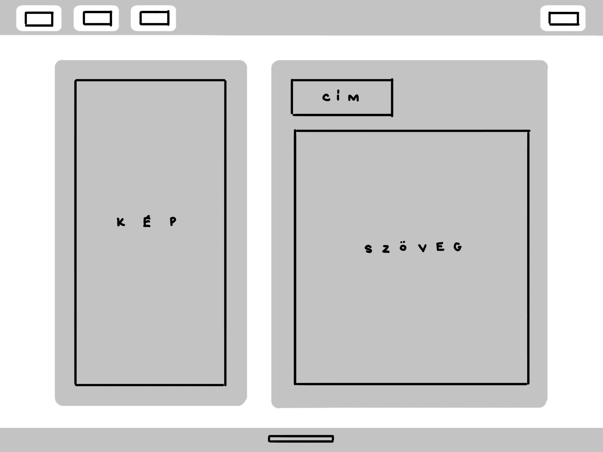
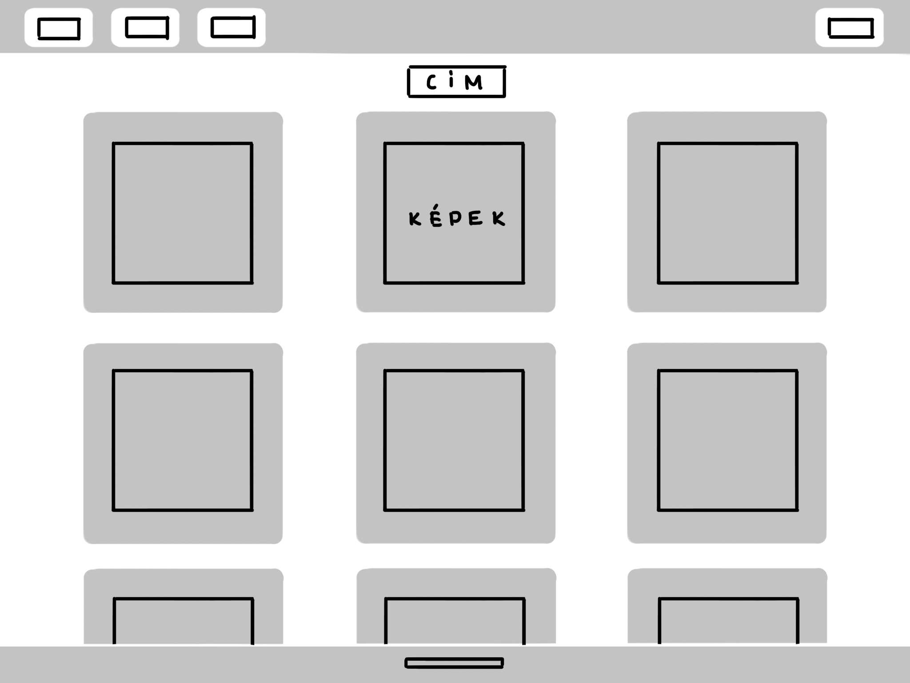
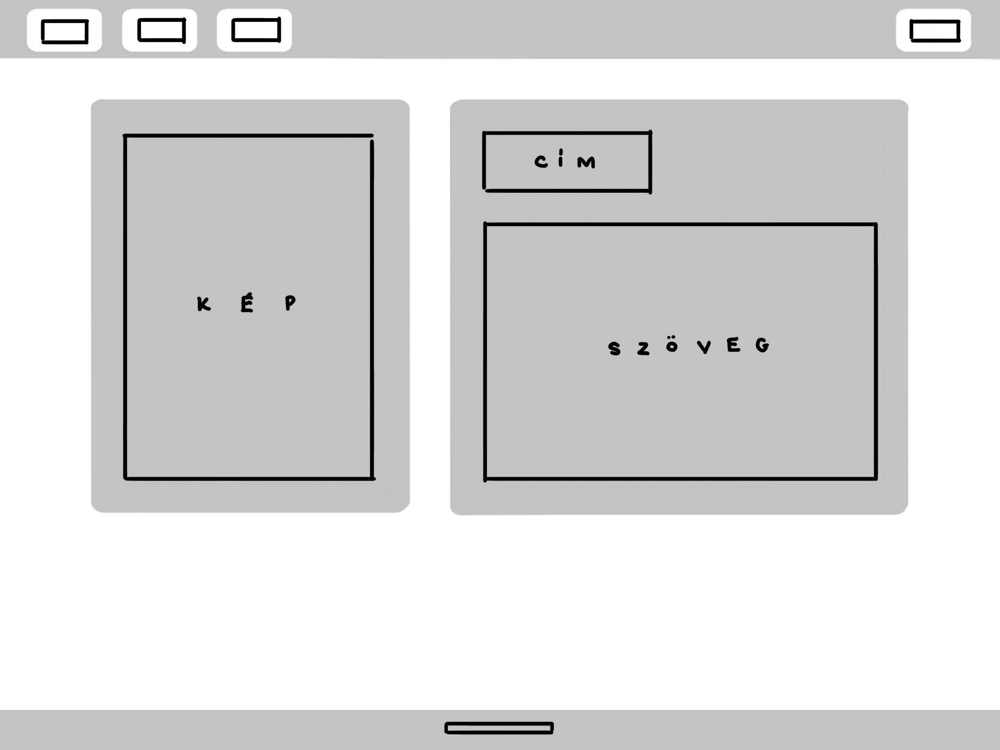

Dokumentáció
A weboldal terve:
A célom az oldal tervezése során egy olyan egyszerű, jól átlátható és kellemes beütésű weboldal megalkotása volt, ami tükrözi a személyiségemet.
Az oldal designjának az alapját a fehér és világosszürke kapcsolata adja, amiknek a váltogatásával el tudom választani a különböző elemeket egymástól. Ezen kívül az oldal szinte csak lekerekített sarkú téglalapokból áll, ezzel vizuálisan a formák egy egységet alkotnak.
Itt látható a főoldal eredeti terve:

Mint az a képen látható, három fő elemből terveztem felépíteni a főoldalt:
A fenti vezérlősávból, ahol könnyen lehet az oldalak között navigálni, mivel az minden oldalon változatlan marad.
A közéső tartalom részből, amiben egy griddel szándékoztam megoldani a kép és szöveg elválasztását.
És az alsó láblécből, aminek a közepén valami rövid szöveget helyeztem volna el.
A következő kép a képeket tartalmazó oldal tervét ábrázolja:

Az ezt követő kép a "Kapcsolat" oldal tervét mutatja be:

A tervtől való eltérés:
Az eredeti tervtől eltértem több helyen is, hiszen előfordult, hogy problémába ütköztem.
Láblécet nem sikerült az elképzelések szerint készítenem, mivel a böngészőm azt a tartalom tetejére helyezte el, és ha az oldalon lejjebb görgettünk, nem ugrott a legaljára a képernyőnek, ahogy vártam volna, hanem ott maradt a többi elem tetején ahova azt a böngésző először elhelyezte. Mivel semmi szükséges információt nem helyeztem volna a láblécbe, ezért úgy döntöttem, kihagyom.
Az első képen, a főoldal és a "kapcsolat" oldal tervein látható, hogy a képet és a szöveget a gridben 1/3 kép - 2/3 szöveg arányban terveztem elosztani, viszont azt nem tudtam megoldani, hogy ezek keskenyebb kijelző esetén egymás alá ugorva azonos szélességűek legyenek. Ezért a megoldás erre a problémára végül az azonos szélesség használata volt.
Illetve a legutolsó változtatás egy árnyalattal világosabb szürke használata volt, hiszen az eredeti nagyon súlyosnak hatott a fehér oldalháttéren elhelyezve.
Nehézséget az okozott a leginkább, hogy a böngésző nem mindig jelenítette meg a kódban tett változásokat, annak ellenére, hogy a fájlokat elmentettem és az oldalt frissítettem. Így a két féle böngészőm (Firefox Dev.Ed, Edge) közül mindig azt kellett használnom, amelyik a weboldalt éppen a helyes módon ábrázolta.
Felhasznált weboldalak:
w3schools.com
hexcolortool.com